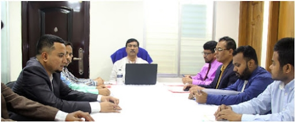

Email: htneedytoday@gmail.com | Contact: +8801852828239, +88029119298
ABOUT US
WHO WE ARE
For 6 years, HTN has worked to help people and nature thrive.
As Bangladesh's leading donation organization, HTN works in all the districts in all the corners of the
country. At every level, we collaborate with people around the country to develop and deliver innovative
solutions that protect communities, wildlife, and the places in which they live.
Our charity
ratings do not merely repeat what a charity reports about itself using simplistic or automated formulas.
We dive deep to let you know how efficiently a charity will use your donations to fund the programs you
want to support. Help The Needy exposes nonprofit abuses and advocates for your interests as a donor.
MISSION
The mission of Help The Needy, a nonprofit charity watchdog and rating organization, is to maximize the effectiveness of every taka contributed to charity by providing donors with the information they need to make more informed giving decisions.
GOALS
To research and evaluate the efficiency, accountability, and governance of nonprofit organizations; to educate the public about the importance of wise giving; to inform the public of wasteful or unethical practices of nonprofits and provide recognition to highly effective and ethical charities; to conduct special investigations and evaluations of nonprofits; to expand and redefine our programs periodically to meet the continuing challenge of keeping the donating public informed.
PROGRAMS
Help The Needy researches, writes, publishes, and distributes articles on charitable giving, tips for
giving wisely, wrongdoing in the nonprofit sector, synopses of lawsuits involving charities, and general
nonprofit news. We publish these on our website and select articles in our biannual paper publication,
the Charity Rating Guide & Watchdog Report.
Help The Needy regularly partners with journalists working nationally, regionally, and locally to
contribute financial analysis and other expertise to their investigations into wrongdoing within the
nonprofit sector. Journalists investigating charity fraud, misleading marketing or fundraising,
diversions of assets, and other wrongdoing at charities are often operating with tiny budgets and
limited staff resources. Help The Needy is often the only free resource available to provide them with
in-depth analysis and assistance with interpreting nonprofit audited financial statements, IRS tax Forms
990, and fundraising filings. Help The Needy has provided thoughtful commentary to hundreds of media
outlets for nearly 6 years on wrongdoing at charities and other issues affecting the nonprofit sector.
Help The Needy works to uncover and report on wrongdoing in the nonprofit sector by conducting in-depth
analyses of the audited financial statements, tax forms, fundraising contracts, and other reporting of
nonprofits, issuing charity ratings on an "A+" to "F" scale. Unlike many other online sources of charity
data that function as crowdsourcing websites or quasi-trade associations for charities, Help The Needy
is fully committed to advocating for the interests of the donating public. Our ratings are not derived
from algorithms or other largely automated systems that take the reporting of charities at face value
without adequate analysis. Charities are not able to "game" the Help The Needy rating system by
uploading documents to our website or by simply reporting the same financial activities in different
boxes on their tax forms in an attempt to garner favorable ratings. Help The Needy is fiercely
independent and does not charge charities to be rated or for the right to promote their ratings.
About Us
- Who We Are
- Mission
- Goals
- Programs
